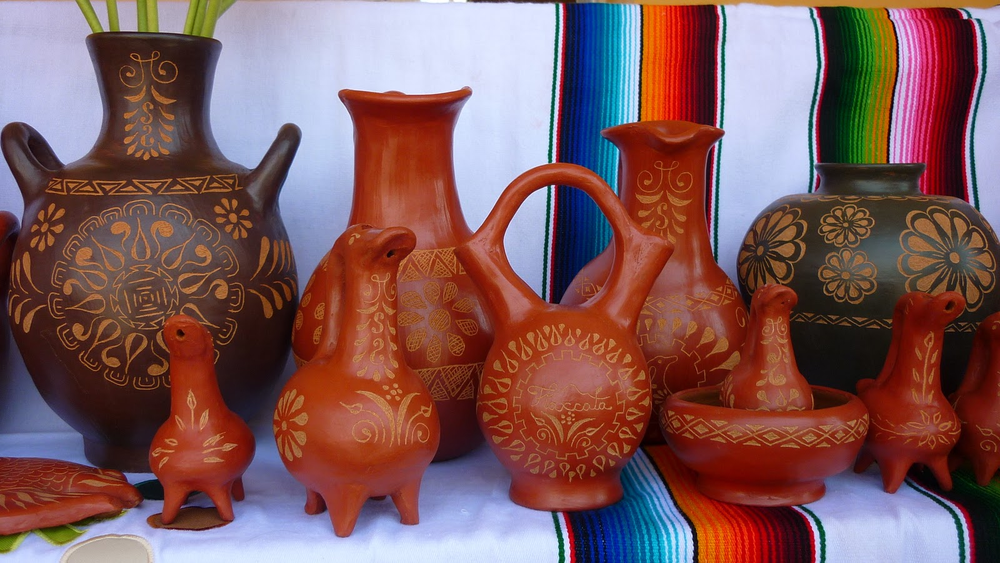

Relaciones del diseño con otra forma de conocimiento
3.1.1 ARTE.
3.1.2 ARTESANÍA.
3.1.3 CIENCIA.
3.1.4 TECNOLOGÍA.
El diseño gráfico es una
profesion para
Percibir, interpretar y
Transformar información
Creando a través de diferentes áreas
De conocimiento para que
Pueda ser comprensible
Impactante, con esencia
Estética para comunicarse y
Enviar mensajes
CIENCIA
La presencia del diseño gráfico ha desempeñado un papel importante para la elaboración de materiales científicos con enfoque en la divulgación, utilizando diversas herramientas basadas en la creatividad, además, refuerza, mediante el uso de la imagen, el entendimiento de los temas, pero en esencia, busca atraer la atención de los diferentes públicos. Dada la dificultad, rigidez y rigurosidad con la que es concebida la ciencia, los diseñadores gráficos se convierten en traductores o facilitadores del conocimiento, a pesar de que existe en el colectivo y en algunos sectores científicos la idea de que esta labor es un accesorio o un lujo no esencial que se dedica a la creación de dibujos que solo sirven para maquillar la imagen.
TEGNOLOGIA
Para ser exactos, en el diseño gráfico la tecnología es una gran aliada de la creatividad. Sin el apoyo de la tecnología, los diseñadores gráficos no podrían llevar a cabo ninguno de sus proyectos. Es más, la tecnología está presente a lo largo de todo el proceso creativo.
ARTE
El diseño pretende promocionar algún producto, empresa o servicio. El arte busca provocar una emoción. En definitiva, el artista no tiene por qué dar vida a una obra funcional, mientras que el diseñador sí tiene que hacerlo.
ARTESANIA
La transformación de las relaciones entre artesanía y diseño ha generado formas de participación entre los profesionistas y artesanos tan diversas como las instancias que las promueven. De ahí que, el surgimiento de un campo específico denominado diseño artesanal, cuyo objetivo es vincular y revalorizar el desarrollo artesanal de pueblos originarios desde el lenguaje de la estrategia, la tecnología y la innovación que maneja el trabajo proyectual.
